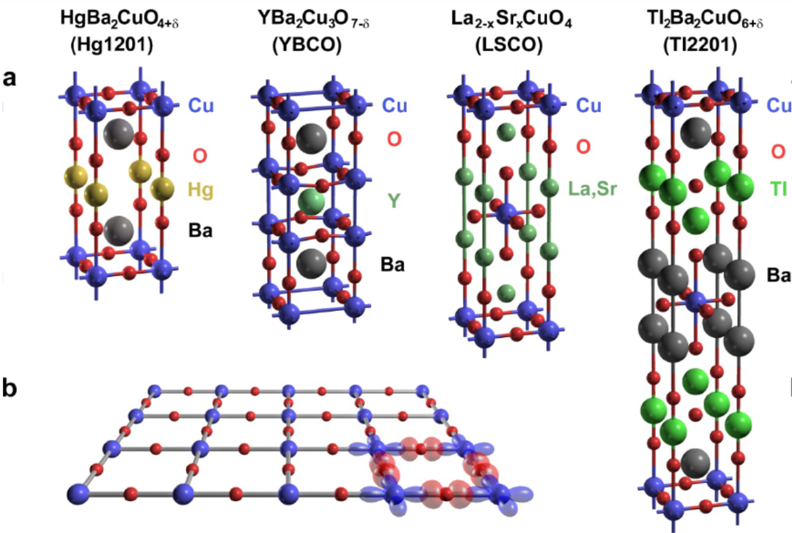

I’m Louis Haurie, a physicist at heart and an engineer by trade. My journey started with a PhD in theoretical condensed matter, where I explored strongly correlated electrons using the Hubbard model. I’ve always been fascinated by how tiny, discrete particles (atoms and electrons) assemble to create the complexity of the world around us.

Crystal structure of 4 types of cuprates. Taken from this articleAfter my PhD, I realized that academia, with its intense pressure, precarious postdocs, endless race for publications, and dwindling amount of permanent position wasn’t the right environment for me. I moved to industry, learning a lot about high-performance computing and high accuracy physics simulations for a variety of industrial actors with codes like Code_Aster, Code_Saturne, OpenTelemac, and Salome. Along the way, I’ve learned a lot about numerical methods, parallel computing, docker, linux, virtual machines, git, optimization and many more numerical skills that could turn useful for a numerical physicist.
Yet my love for statistical physics and fundamental questions never left. A few months ago, I started revisiting old lectures and compiling various notes to deepen my understanding of physics, from the basics to complex phenomena. This site, Physics Compiled, is the result: a place to share these notes, reflections, and research ideas, to connect theories with experiments, and to explore physics freely while benefiting from the feedback of curious readers and potential collaborators.
I do have several research plans, but before getting back to it I want to finish first the basic sections of my notes. I'll provide more information on that
with time. In the meantime, If you found any mistake or unaccurate statement (or just better ways of presenting what's written) and would like to contribute, discuss or collaborate, you can either create an issue
on my github repository or contact me directly by mail: